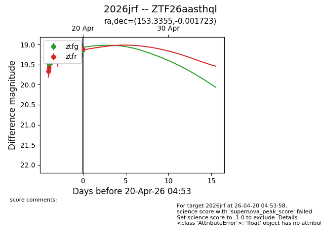
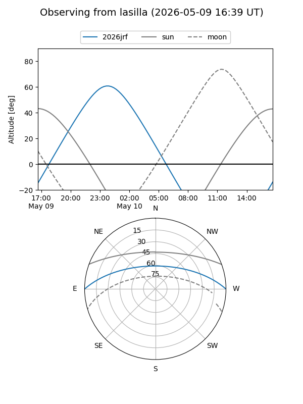
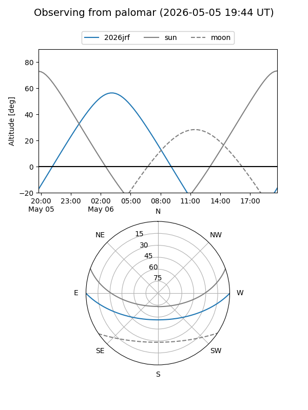
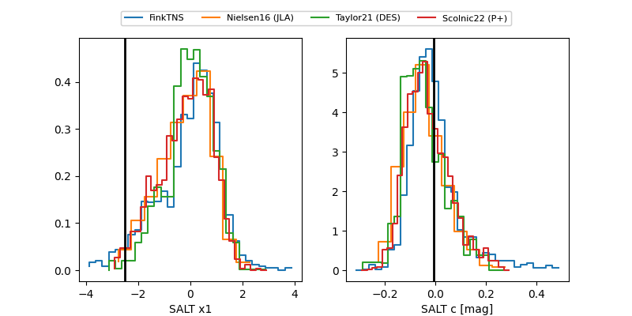

2026jrf
Target 2026jrf at 2026-04-20 05:03
Aliases and brokers:
FINK: link
Lasair: link
ALeRCE: link
TNS: link
YSE: link
alt names
ZTF26aasthql (ztf,fink_ztf)
2026jrf (tns,yse)
Coordinates:
equatorial (ra, dec) = 153.3355,-0.00172
equatorial (HMS+DMS) = 10:13:20.53,-00:00:06.20
galactic (l, b) = (241.8624,+43.35261)
Flags:
Photometry:
last ztfg=19.15, ztfr=19.11
3 ztfg, 5 ztfr detections
Lightcurve

Visibility


Additional plots
